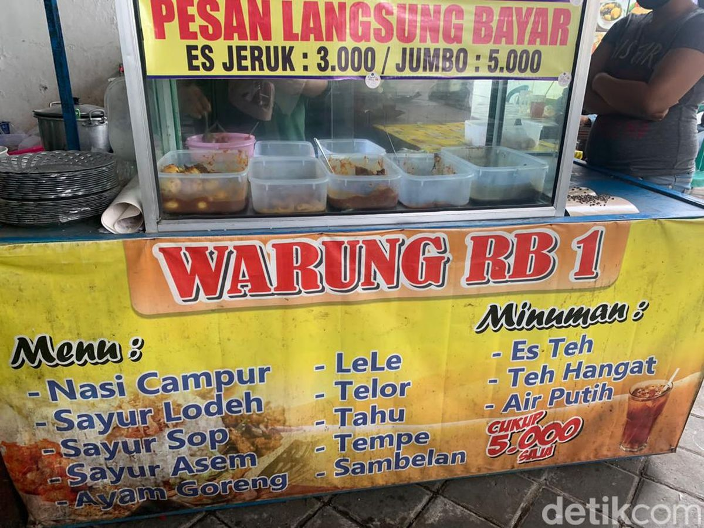
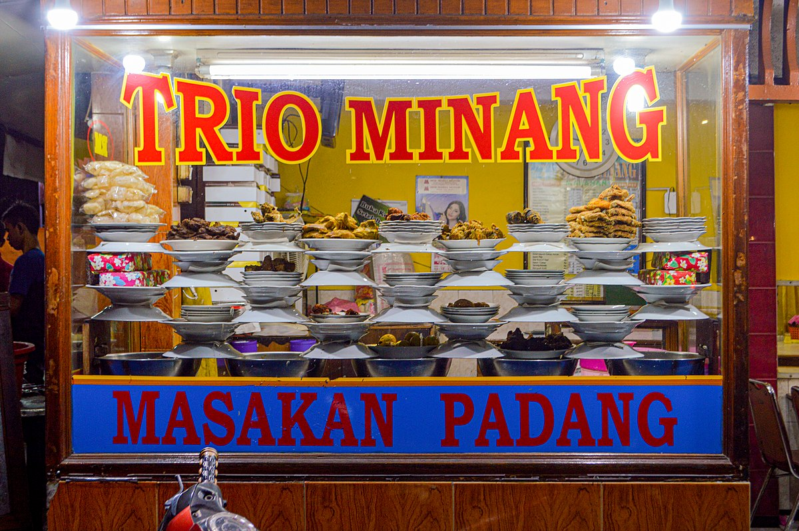
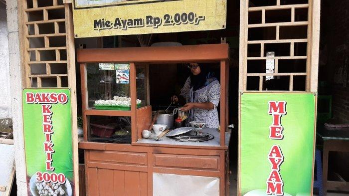
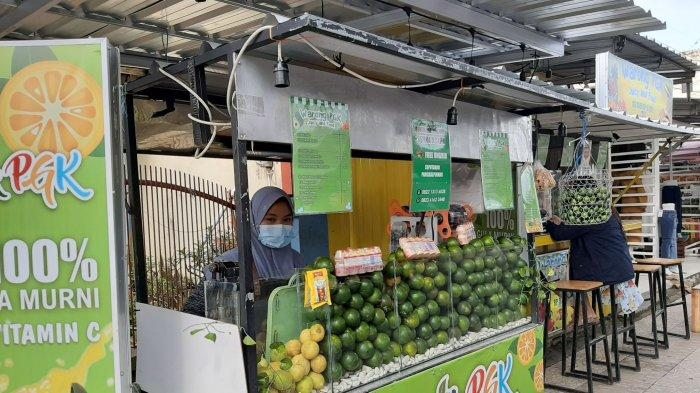
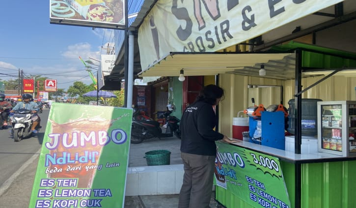

Warung Makan
Warung makan merupakan usaha skala kecil yang menjual makanan. Kebanyakan warung makan merupakan tempat makan yang sederhana dan dikunjungi oleh kalangan menengah ke bawah tetapi banyak pula kalangan kelas menengah ke atas makan di sini.

Keberadaan rumah makan mulai dikenal sejak abad ke-9 di daerah Timur Tengah sebelum muncul di Tiongkok.
Makanan
Makanan atau panganan adalah zat yang dimakan oleh makhluk hidup untuk mendapatkan nutrisi yang kemudian diolah menjadi energi. Karbohidrat, lemak, protein, vitamin, dan mineral merupakan nutrien dalam makanan yang dibutuhkan oleh tubuh.
Nasi Padang
Nasi padang adalah nasi putih yang disajikan dengan berbagai macam lauk-pauk khas Minangkabau, Indonesia. Kata padang merujuk pada ibu kota Provinsi Sumatera Barat, Padang.

Mie Ayam
Mi ayam adalah hidangan khas Indonesia yang terbuat dari mi gandum yang dibumbui dengan daging ayam yang biasanya dipotong dadu. Hidangan ini banyak terpengaruh dengan teknik penyajian kuliner yang digunakan dalam hidangan Tionghoa. Di Indonesia, mi ayam merupakan hidangan Tionghoa-Indonesia yang sangat terkenal.

Minuman
Minuman adalah cairan yang dimaksudkan untuk dikonsumsi manusia. Selain fungsi dasar mereka untuk memuaskan dahaga, minuman memainkan peran penting dalam budaya manusia. Jenis minuman yang umum termasuk air minum biasa, susu, jus, smoothie, dan minuman-minuman bersoda.
Es Jeruk
Es jeruk adalah minuman yang terbuat dari buah jeruk. menyehatkan tubuh. tentunya memiliki manfaat yang sangat baik bagi kesehatan. memiliki rasa yang lezat.

Es Teh
Es teh adalah minuman teh yang disajikan dingin dengan es batu. Es teh adalah minuman yang sering diminum saat siang hari karena suhu udara yang panas.
